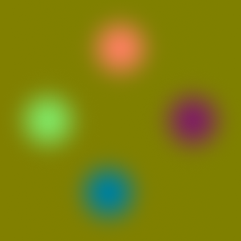

VRayDisplacementMod
A displaced landscape; 2D displacement was used; the displacement map is a Simbiont procedural texture
VRayDisplacementMod Overview
Displacement mapping is a technique for adding detail to your scene geometry without having to model it first. The concept is very similar to bump mapping. However, bump mapping is a shading effect that only changes the appearance of a surface, while displacement mapping actually modifies the surface.
Example: Displacement vs Bump Mapping
This example shows the difference between bump mapping and displacement mapping. Notice the round outline of the sphere and its shadow in the case of bump mapping, and the deformed outline produced by the displacement:

Bump mapping
Displacement mapping
The displacement map in this case is a 3d Cellular map; the 3D displacement method was used.
Type
Type - the method used to apply displacement mapping:
-
2D mapping (landscape) - this method bases the displacement on a texture map that is known in advance. The displaced surface is rendered as a warped height-field based on that texture map. The actual raytracing of the displaced surface is done in texture space, and the result is mapped back into 3d space. The advantage of this method is that it preserves all the details in the displacement map. However, it requires that the object has valid texture coordinates. You cannot use this method for 3d procedural textures or other textures that use object or world coordinates. The displacement map can take any values (as opposed to 3D mapping, which will ignore values outside the 0.0-1.0 or black to white range).
-
3D mapping - this is a general method which takes the original surface geometry and subdivides its triangles into smaller sub-triangles which are then displaced. It can be applied for arbitrary displacement maps with any kind of mapping. This method can also use the displacement map specified in the object's material. Note that with 3d mapping the displacement map's range of values must be within the 0.0-1.0 range (black to white). Values outside of this range will be clipped.
-
Subdivision - this method is similar to the 3D mapping method, with the difference that it will apply a subdivision scheme to the object, similarly to a MeshSmooth modifier. For triangular portions of a mesh, the Loop subdivision scheme is used. For quadrangular portions, the Catmull-Clark scheme is used. Other polygons are first converted to triangles. If just want to smooth the object, without applying a displacement map, set the Amount parameter to 0.0.
Example: Subdivision Displacement
Here is an example of subdivision displacement (head model by Alexander Sokerov):
No subdivision or displacement
Only subdivision (displacement Amount is 0.0)
Subdivision and displacement
Which method to use? In previous V-Ray versions, there was a great difference between the performance of the two methods, with the 2D mapping being faster in many cases. With the introduction of dynamic geometry handling in V-Ray 1.45.xx, 3d displacement has become a lot faster for similar or better quality compared to the 2d mapping. Still, for large displaced surfaces like oceans or mountains, the 2d mapping method might work better.
Also the 2D mapping method keeps the displacement map in a precompiled state in memory. Large displacement maps can take a lot of RAM. It may be more efficient to use 3D mapping in that case, since it can recycle the memory used for the displaced geometry.
Common Parameters
Texmap - the displacement map. This can be any texture map - a bitmap, procedural map, 2d or 3d map etc. Note that you can only use textures with explicit UV mapping with 2D displacement, while with 3D displacement any texture can be used. The texture map is ignored if the Use object mtl option is turned on.
Texture chan - the UVW channel that will be used for displacement mapping. This must match the texture channel specified in the texture map itself, if it uses explicit UVW mapping. This is ignored if the Use object mtl option is on.
Filter texmap - if this is on, the texture map will be filtered. This is ignored if the Use object mtl option is on.
Filter Blur - the strength of the filter applied to the map.
Amount - the amount of displacement. A value of 0.0 means the object will appear unchanged (or simply smoothed, if you use the Subdivision method). Higher values produce a greater displacement effect. This can also be negative, in which case the displacement will push geometry inside the object.
Shift - this specifies a constant, which will be added to the displacement map values, effectively shifting the displaced surface up and down along the normals. This can be either positive or negative.
Example: the Shift Parameter
Note that the Shift parameter is an absolute value in world units. If you change the Amount, you will probably need to adjust the Shift too.
Shift = -5.0
Shift = 0.0
Shift = 5.0
Water level - this will clip the surface geometry in places where the displacement map value is below the specified threshold. This can be used for clip mapping a displacement map value below which geometry will be clipped.
Example: Clip Mapping
Note: The Water level parameter is also absolute in world units. If you change the Amount and/or Shift, you will probably need to adjust the Water level to get the same effect. For this example, the Amount parameter is set to 5.0 and the Shift parameter is set to 0.0.

Water level = 0.0 (no clipping)
Water level = 1.25
Water level = 2.5
Water level = 3.75
Water level = 5.0 (all geometry is clipped)
This example demonstrates the use of displacement mapping to clip away geometry from an object. The displacement map is a mix of a Noise map and a tiled Gradient ramp map; the dark regions of the map are clipped away:
In this case the displacement map was applied to an explicit mapping channel; 2D displacement was used in this case.
2D Mapping Parameters
Resolution - this determines the resolution of the displacement texture used by V-Ray. If the texture map is a bitmap, it would be best to match this resolution to the size of the bitmap. For procedural 2d maps, the resolution is determined by the desired quality and detail in the displacement. Note that V-Ray will also automatically generate a normals map based on the displacement map, to compensate for details not captured by the actual displaced surface.
Precision - this parameter is related to the curvature of the displaced surface; flat surfaces can do with a lower precision (for a perfectly flat plane you can use 1), more curved surfaces require higher values. If the precision is not high enough you can get dark spots ("surface acne") on the displacement. Lower values compute faster.
Tight bounds - this parameter will cause V-Ray to compute more precise bounding volumes for the displaced triangles, leading to slightly better rendering times.
3D Mapping/Subdivision Parameters
Edge length - this determines the quality of the displacement. Each triangle of the original mesh is subdivided into a number of subtriangles. More subtriangles mean more detail in the displacement, slower rendering times and more RAM usage. Less subtriangles mean less detail, faster rendering and less RAM. The meaning of Edge length depends on the View-dependent parameter below.
Example: Edge Length
The image below was rendered with a VRayEdgesTex map in the Diffuse slot of the material, so you can see the original triangles of the mesh. Additionally, we turned on the Faceted option in the VRayMtl. Now, V-Ray will not only smooth the surface normals, but will also automatically apply a normals map that represents the normal of the perfect displaced surface, which will make the surface look a lot more detailed that it actually is.
View-dependent is turned on, and it refers to pixels in the original image, not the zoomed-in image you get with a blow-up rendering. This is why we were able to do a blow-up rendering to see the individual subtriangles better. Click the images for a larger view:
Edge Length 0.5
Edge Length 0.5 Close up view
Edge Length 1.0
Edge Length 1.0 Close up view
Edge Length 2.0
Edge Length 2.0 Close up view
Edge Length 5.0
Edge Length 5.0 Close up view
Edge Length 10.0
Edge Length 10.0 Close up view
View-dependent - when this is on, Edge length determines the maximum length of a subtriangle edge, in pixels. A value of 1.0 means that the longest edge of each subtriangle will be about one pixel long when projected on the screen. When View-dependent is off, Edge length is the maximum subtriangle edge length in world units.
Max. subdivs - this controls the maximum subtriangles generated from any triangle of the original mesh. The value is in fact the square root of the maximum number of subtriangles. For example, a value of 256 means that at most 256 x 256 = 65536 subtriangles will be generated for any given original triangle. It is not a good idea to keep this value very high. If you need to use higher values, it will be better to tessellate the original mesh itself into smaller triangles instead. From build 1.45.20 onward, the actual subdivisions for a triangle are rounded up to the nearest power of two (this makes it easier to avoid gaps because of different tessellation on neighboring triangles).
Smooth UVs - allows you to choose whether or not the UVs of the object will be subdivided.
Smooth UVs at Borders - allows you to choose whether or not the UVs of the object will be subdivided at the borders.
Tight bounds - when this is on, V-Ray will try to compute the exact bounding volume of the displaced triangles from the original mesh. This requires pre-sampling of the displacement texture, but the rendering will be faster, if the texture has large black or white areas. However, if the displacement texture is slow to evaluate and varies a lot between full black and white, it may be faster to turn this option off. When it is off, V-Ray will assume worst-case bounding volumes, and will not presample the texture. Note that this affects only the 2d mapping and 3d mapping modes; with the Subdivision method V-Ray will always compute the exact bounding volume and this parameter is ignored.
Use object mtl - this will cause the displacement map to be taken from the object's material instead of the map selected in VRayDisplacementMod.
Keep continuity - using this will try to produce a connected surface, without splits, when you have faces from different smoothing groups and/or material IDs. Note that using material IDs is not a very good way to combine displacement maps since V-Ray cannot always guarantee the surface continuity. Use other methods (vertex colors, masks etc) to blend different displacement maps.
Example: The Keep Continuity Option
The Keep continuity option is useful for objects with disjoint normals on neighboring triangles, usually because of different smoothing groups. In the middle image below you can see the edge splits produced by disjoint normals. Using the Keep continuity option avoids this problem. This option will also help to produce a smoother result across material ID boundaries for objects with multi/subobject materials.
No displacement
Keep continuity is off
Keep continuity is on
Edge thresh - when Keep continuity is checked, this controls the extent to which maps on faces with different material IDs will be blended. Note that V-Ray can only guarantee edge continuity, but not vertex continuity (meaning that the surface will not have gaps along edges, but there may be splits around vertices). For this reason, you should keep this value small.
Vector Displacement - If you have a displacement texture that is not gray scale V-Ray will convert it to gray scale before rendering the displaced geometry. When this option is enabled it allows V-Ray to use the Red Green and Blue channels of the displacement texture to displace the geometry in the U and V directions in addition to the normal of the face.
-
Disabled - no vector displacement; regular displacement along the surface normal will be used in this case;
-
Tangent - the texture is interpreted as 0.5-based tangent space displacement map;
-
Object - this type is only meaningful with Ptex displacement textures through the VRayPtex texture where the texture values represent 0-based displacement in object space. If mesh information is stored in the Ptex file, V-Ray can also displace correctly mesh deformations. Object-space Ptex vector displacement only works for subdivision surfaces when the displacement Type is Subdivision.
Example: Vector Displacement
This example shows the effect of the Vector displacement option in more detail.
The first image on the left shows a complex detail that we convert to a vector displacement map by baking a simpler version of the object with a VRayVectorDisplBake material on it. The second image shows the resulting displacement map, where the red, green and blue components define displacement vectors in the texture UVW space. The final image on the right shows the vector displacement map applied on another object through the VRayDisplacementMod modifier.

A piece of complex geometry, and a simple version with a VRayVectorDisplBake material.

The displacement map, computed by texture baking with the VRayCompleteMapbake element of the simple geometry. The result is saved into an .exr file (a .png file is shown here for the help index).
The displacement map applied on a different geometry through the VRayDisplacementMod modifier with Vector displacement option on.
Cache normals - when this option is enabled V-Ray generates and saves information about the normal of each newly generated vertex. This requires additional memory but speeds up the shading calculations during rendering.
Split Method - determines the method which is going to be used to subdivide the faces of the geometry.
Example: Split Method
This example shows the effect of the Split method parameter. To better illustrate the effect, the object has a Standard material with the Faceted option on, and a VRayEdgesTex texture in the diffuse slot to show the boundaries of the original mesh triangles. Note how the Binary setting may cause the orientation of the displacement sub-triangles to change, whereas the Quad setting keeps them aligned in the same way.
Split method is set to Binary
Split method is set to Quad
Tex. map min/max - these two options allow you to specify custom boundaries for the displaced geometry. By default is limited to values between 0 and 1.
Example: Texture Boundaries
This example shows a plane mapped with a displacement map that has negative values. With the default boundaries for the displacement we are unable to see the geometry displaced in the negative direction. However, once we set the custom boundaries to -1 and 1 we can see the displaced geometry in both the positive and negative direction.
Texmap min = 0 ; Texmap max = 1
Texmap min = -1; Texmap max = 1
Example: Displacement on a Character
This example shows displacement on a character; the map is a 3D cellular map, so the 3D displacement method is used.
Note that if the character is animated and the map is a 3d map using Object XYZ mapping, then the map will change relative to the object surface, since the surface itself changes its position in space. If you want to lock 3d procedural maps to the surfaces of animated objects, apply a UVW Map modifier with mode set to XYZ to UVW to the objects, and use Explicit mapping channel for the procedural map.
3D cellular map with 3D displacement on a character;
Character without displacement
Notes
-
Textures are applied to the displaced surface; therefore, textures with Object XYZ and World XYZ mapping may look different on the displaced object, compared to how they look on the original undisplaced one. If this is not desired (e.g. you want the displacement map to match the texture), use explicit channel mapping for the material textures; use the Object XYZ/World XYZ mapping for displacement maps only.
-
Displaced objects will not work properly with standard shadows maps. The shadow maps will include information about the undisplaced mesh. For small displacement amounts this may work fine. Note that displacement works properly with VRayShadowMap shadows.
-
VRayDisplacementMod has no effect on VRayPlane objects, VRayProxy objects or VRayFur objects.
-
The 2d mapping (landscape) method will ignore the Tiling parameters specified in the textures themselves; as a side effect this means that it will not work with the Real-world map size options in the Bitmap and other textures. Instead, you must modify the UVW coordinates of the object, or use the 3d mapping method.